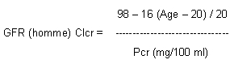
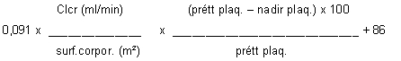
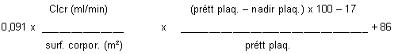

RÉSUMÉ DES CARACTÉRISTIQUES DU PRODUIT
ANSM - Mis à jour le : 20/09/2006
CARBOPLATINE AGUETTANT 10 mg/ml, solution pour perfusion
2. COMPOSITION QUALITATIVE ET QUANTITATIVE
Carboplatine ...................................................................................................................................... 10 mg
Pour 1 ml.
Pour la liste complète des excipients, voir rubrique 6.1.
Solution pour perfusion.
Solution limpide et incolore.
4.1. Indications thérapeutiques
· Carcinome de l'ovaire d'origine épithéliale.
· Carcinome bronchique à petites cellules.
· Carcinome épidermoïde des voies aérodigestives supérieures.
4.2. Posologie et mode d'administration
Monochimiothérapie:
La posologie recommandée de carboplatine chez les malades non pré-traités antérieurement par une chimiothérapie cytotoxique et dont la fonction rénale normale est de 400 mg/m2, injectés par perfusion intraveineuse de brève durée (15 à 60 min). Le traitement ne devrait pas être répété avant un délai de 4 semaines, après l'administration précédente du carboplatine et/ou tant que le nombre de neutrophiles n'est pas supérieur ou égal à 2 000/mm3 et le nombre de plaquettes à 100 000/mm3.
Une diminution de 20 à 25 % de cette posologie initiale peut être recommandée chez les malades présentant des facteurs de risques tels qu'un traitement myélosuppresseur antérieur et/ou radiothérapie ou un mauvais état général (ECOG-Zubrod 2-4 ou indice de Karnofsky inférieur à 80).
Il est recommandé de déterminer le nadir hématologique par des numérations sanguines hebdomadaires au cours des premières cures de carboplatine en vue de l'ajustement ultérieur de la posologie.
Thérapies associées:
L'utilisation optimale du carboplatine associé à d'autres agents myélosuppresseurs requiert un ajustement de la posologie en fonction du protocole thérapeutique et du calendrier à adopter.
Insuffisance rénale:
Le risque d'aplasie médullaire sévère est plus important chez les patients dont la clairance de la créatinine est inférieure à 60 ml/min. L'utilisation optimale du carboplatine chez les patients atteints d'insuffisance rénale exige des ajustements posologiques appropriés et des contrôles fréquents des nadirs hématologiques et de la fonction rénale.
Il est possible de prévenir la survenue d'une leucopénie, d'une neutropénie ou d'une thrombopénie sévère par la posologie suivante:
· 250 mg/m2 i.v. le 1er jour chez les patients dont la valeur basale de la clairance de la créatinine est comprise entre 41 et 59 ml/min.
· 200 mg/m2 i.v. le 1er jour chez les patients dont la valeur basale de la clairance de la créatinine est comprise entre 21 et 40 ml/min.
Le carboplatine est contre-indiqué chez les patients ayant un GFR ≤ 20 ml/min.
Autres méthodes de détermination de posologie (en mono- ou polychimiothérapie, y compris dans le cas d'insuffisance rénale):
L'adaptation individuelle des posologies de carboplatine peut aussi être approchée en utilisant la formule de Calvert ou la formule d'Egorin.
· La formule de Calvert tient compte du débit de filtration glomérulaire (GFR en ml/min) et de l'aire sous la courbe (AUC en mg/ml x min):
|
Dose (mg) = AUC (mg/ml x min) x (GFR ml/min + 25) |
(la formule de Calvert calcule la dose totale en mg, et non en mg/m2).
La méthode de référence pour déterminer le débit de filtration glomérulaire (GFR) est la mesure de la clairance à l'EDTA marqué au chrome 51 qui implique la manipulation de produits radioactifs. En pratique, on estime que le débit est correctement évalué par la clairance de la créatinine (Clcr), elle-même estimée grâce à la méthode prédictive de Jeliffe qui tient compte de l'âge, du sexe et de la créatininémie plasmatique (Pcr):
GFR (femme) = 0,9 x GFR (homme)

Les AUC cibles sont fonction des éventuels traitements antérieurs et du protocole thérapeutique selon que le carboplatine est utilisé seul ou en association:
|
ASC visée |
Chimiothérapie prévue |
Traitement précédent |
|
5-7 mg/ml x min |
Carboplatine en monothérapie |
Pas de traitement antérieur |
|
4 - 6 mg/ml x min |
Carboplatine en monothérapie |
Traitement antérieur |
|
4 - 6 mg/ml x min |
Carboplatine plus cyclophosphamide |
Pas de traitement antérieur |
La formule d'Egorin calcule la dose totale en mg/m2.
Patient non pré-traité par chimiothérapie:
|
Dose (mg/m2)  Monochimiothérapie: en pratique se fixer un nadir de plaquettes à 50 000/mm3 ou l'adapter en fonction de l'objectif thérapeutique (curatif versus palliatif). |
Patient pré-traité par chimiothérapie:
|
Dose (mg/m2)  Monochimiothérapie: en pratique se fixer un nadir de plaquettes à 50 000/mm3 ou l'adapter en fonction de l'objectif thérapeutique (curatif versus palliatif). |
Patients âgées (plus de 65 ans):
Un ajustement de la posologie, initial ou ultérieur, peut être rendu nécessaire par l'état physique du patient.
Enfants et adolescents:
Dans l'état actuel des connaissances, il n'est pas possible de recommander une posologie particulière pour l'utilisation pédiatrique du carboplatine
Mode d'administration
Voie d'administration: voie intraveineuse.
Les différents dosages de carboplatine peuvent être administrés tels quels à la concentration de 10 mg/ml en dérivation d'une perfusion de solution de glucose à 5%. Ils peuvent aussi être dilués avant administration à l'aide d'une solution de glucose à 5 % jusqu'à une concentration minimale de 0,5 mg/ml. Dans tous les cas, il est recommandé après perfusion de carboplatine de rincer la veine avec une solution de glucose à 5 %.
Remarque:
Aucun des composants nécessaires à l'administration intraveineuse par perfusion du Carboplatine ne doit contenir en totalité ou en partie de l'aluminium. En effet, une interaction entre l'aluminium et le platine serait responsable d'un précipité noir que l'on pourrait observer après reconstitution de la solution.
En cas d'extravasation, l'administration sera interrompue immédiatement.
Modalités de manipulation
La préparation des solutions injectables de cytotoxiques doit être obligatoirement réalisée par un personnel spécialisé et entraîné ayant une connaissance des médicaments utilisés, dans des conditions assurant la protection de l'environnement et surtout la protection du personnel qui manipule. Elle nécessite un local de préparation réservé à cet usage. Il est interdit de fumer, de manger, de boire dans ce local. Les manipulateurs doivent disposer d'un ensemble de matériel approprié à la manipulation notamment blouses à manches longues, masques de protection, calot, lunettes de protection, gants à usage unique stériles, champs de protection du plan de travail, conteneurs et sacs de collecte des déchets. Les excreta et les vomissures doivent être manipulés avec précaution. Les femmes enceintes doivent être averties et éviter la manipulation des cytotoxiques. Tout contenant cassé doit être traité avec les mêmes précautions et considéré comme un déchet contaminé. L'élimination des déchets contaminés se fait par incinération dans des conteneurs rigides étiquetés à cet effet.
Ce médicament est contre-indiqué dans les situations suivantes:
· Insuffisance rénale sévère (clairance de la créatinine < 20 ml/min).
· Hypersensibilité au carboplatine ou à d'autres produits contenant du platine.
· Grossesse et allaitement (voir rubrique 4.6).
· Association avec le vaccin de la fièvre jaune.
4.4. Mises en garde spéciales et précautions d'emploi
Mises en garde spéciales
Ce médicament fait l'objet d'une contre-indication relative dans les cas suivants:
Hypoplasie médullaire sévère et/ou tumeurs hémorragiques.
Le carboplatine doit être administré par des personnes qualifiées en matière de mise en œuvre des traitements anticancéreux.
L'hypoplasie médullaire induite par le carboplatine est étroitement liée à sa clairance rénale. Les patients présentant des troubles de la fonction rénale ou recevant concomitamment d'autres médicaments potentiellement néphrotoxiques sont davantage exposés à une myélotoxicité plus sévère et prolongée. Les paramètres de la fonction rénale doivent donc être soigneusement évalués avant et pendant le traitement. Les cures de carboplatine ne doivent pas être répétées à moins d'un mois d'intervalle dans des circonstances normales. Une thrombopénie, une leucopénie et une anémie peuvent survenir après administration du carboplatine. Il est recommandé de contrôler fréquemment la numération sanguine pendant et après l'administration du carboplatine. En cas d'association du carboplatine et d'autres agents myélosuppresseurs, une grande prudence est nécessaire dans la planification des doses et du rythme des prises afin d'atténuer les effets additifs. Des transfusions de soutien peuvent être nécessaires chez les patients victimes d'une aplasie médullaire sévère.
Précautions d'emploi
· Les paramètres hématologiques doivent être contrôlés avant chaque cure et dans l'intervalle des cycles. Le nadir de la leucopénie se situe au 21e jour (entre le 14e et le 28e), tandis que celui de la thrombopénie se situe au 15e jour (entre le 14e et le 21e) après le traitement. Si le nombre des globules blancs est inférieur à 2 000/mm3 ou si le nombre de plaquettes est inférieur à 100 000 mm3, le traitement par le Carboplatine doit être retardé. La correction des anomalies hématologiques se fait habituellement 5 à 6 semaines après l'administration du produit.
Les épreuves fonctionnelles rénales et hépatiques et les électrolytes sanguins doivent être soigneusement contrôlés.
L'administration du carboplatine peut induire une insuffisance fonctionnelle rénale ou hépatique. Les doses très élevées de carboplatine (>5 fois la dose recommandée en monothérapie) ont provoqué des troubles sévères de la fonction hépatique et rénale. Bien qu'aucune preuve clinique d'un cumul de la néphrotoxicité n'ait été apportée, il est recommandé de ne pas associer le carboplatine et des aminosides ou d'autres substances néphrotoxiques.
· La neurotoxicité est rare, généralement limitée à des paresthésies ou à une diminution des réflexes ostéotendineux. La fréquence et l'intensité de ces manifestations sont plus importantes chez les malades de plus de 65 ans et/ou ayant été traités au préalable par le cisplatine pour lesquels une surveillance neurologique régulière est recommandée.
· Au cours des fréquentes réactions allergiques au carboplatine ont été rapportés, par exemple, une éruption érythémateuse, une fièvre sans cause apparente ou un prurit. De rares cas d'anaphylaxie, d'angio-œdème et de réactions anaphylactoïdes avec bronchospasme, urticaire et œdème facial se sont produits. Ces réactions sont comparables à celles observées après l'administration d'autres substances contenant du platine et peuvent apparaître en quelques minutes. La fréquence des réactions allergiques peut augmenter en cas d'exposition antérieure à un traitement par le platine; des réactions allergiques ont cependant été observées lors de l'exposition initiale au carboplatine. Les patients doivent être surveillés attentivement à la recherche d'éventuelles réactions allergiques et recevoir un traitement de soutien approprié.
· La manipulation et la reconstitution du carboplatine par le personnel médical nécessitent les précautions d'utilisation indispensables pour tout agent cytotoxique.
Le carboplatine peut exercer des effets génotoxiques et possède des propriétés embryotoxiques et tératogènes. Chez les femmes en âge de procréer, toute grossesse doit être évitée au cours du traitement par le carboplatine. Les hommes sexuellement matures doivent éviter toute paternité pendant le traitement et les six mois qui suivent. Des mesures contraceptives ou l'abstinence sont recommandées. Le carboplatine pouvant induire une infertilité irréversible, il est recommandé aux hommes de faire conserver un échantillon de sperme avant le début du traitement.
4.5. Interactions avec d'autres médicaments et autres formes d'interactions
Interactions communes à tous les agents cytotoxiques
En raison de l'augmentation du risque thrombotique lors des affections tumorales, le recours à un traitement anticoagulant est fréquent. La grande variabilité intra-individuelle de la coagulabilité au cours de ces affections, à laquelle s'ajoute l'éventualité d'une interaction entre les anticoagulants oraux et la chimiothérapie anticancéreuse, imposent, s'il est décidé de traiter les patients par anticoagulants oraux, d'augmenter la fréquence des contrôles de l'INR. (International Normalised Ratio).
Utilisation concomitante contre-indiquée:
+ Vaccin contre la fièvre jaune:
Risque de maladie vaccinale généralisée mortelle.
Utilisation concomitante à éviter:
+ Vaccins vivants atténués (sauf fièvre jaune):
Risque de maladie systémique, éventuellement mortelle. Ce risque est majoré chez les sujets déjà immunodéprimés par la maladie sous-jacente.
Utiliser un vaccin inactivé lorsqu'il existe (poliomyélite).
+ Phénytoïne:
Risque d'exacerbation des convulsions par diminution de l'absorption digestive de la phénytoïne induite par le médicament cytotoxique ou risque d'augmentation de la toxicité ou de perte d'efficacité de l'agent cytotoxique par augmentation du métabolisme hépatique induite par la phénytoïne.
Utilisation concomitante à prendre en considération:
En cas d'association du carboplatine à des agents myélosuppresseurs, l'effet du carboplatine et/ou de l'autre médicament sur la moelle osseuse peut être renforcé.
L'administration de médicaments néphrotoxiques et/ou ototoxiques (par exemple les aminosides ou les diurétiques de l'anse) au cours du traitement par le carboplatine peut accroître la toxicité organique des médicaments.
L'administration simultanée de carboplatine et d'agents complexants doit être évitée en raison du risque théorique de diminution de l'activité antinéoplasique du carboplatine. Dans les études chez l'animal et en pratique clinique cependant, l'activité antinéoplasique du carboplatine n'a pas été modifiée par le diéthyldithiocarbamate.
Les propriétés mutagène, embryotoxique et tératogène mises en évidence dans les espèces animales et /ou in vitro font contre-indiquer l'utilisation du Carboplatine au cours de la grossesse.
Le carboplatine est contre-indiqué.
4.7. Effets sur l'aptitude à conduire des véhicules et à utiliser des machines
Sans objet.
La définition des termes de fréquence utilisés: Très fréquent (≥ 1/10); fréquent (≥ 1/100 à < 1/10); peu fréquent (≥ 1/1000 à ≤ 1/100); rare (≥ 1/10000 à ≤ 1/1000); très rare (≤ 1/10000).
La fréquence des effets indésirables rapportés ci-dessous a été établie à partir de données obtenues chez 1893 malades ayant reçu du carboplatine en monothérapie aux doses recommandées. Parmi eux, 20 % avaient été pré-traités par le cisplatine et 30 % par une chimiothérapie ne comportant pas de sels de platine.
Affections hématologiques et du système lymphatique:
· Très fréquent: thrombopénie: plaquettes inférieures à 50 000/mm3 avec un nadir au 21ème jour. La normalisation est intervenue dans un délai moyen de 35 jours après le début du traitement.
Leucopénie: leucocytes inférieurs à 2 000/mm3 avec un nadir au 21ème jour. La normalisation est intervenue dans un délai moyen de 42 jours après le début du traitement.
Neutropénie: neutrophiles inférieurs à 1 000/mm3 avec un nadir au 21ème jour.
Anémie: taux d'hémoglobine inférieur ou égal à 8 g/dl. Cette anémie cumulative réversible a été plus sévère chez les patients pré-traités.
· Fréquent: complications infectieuses et hémorragiques. Elles ont été à l'origine d'un décès dans 1 % des cas.
La myélotoxicité peut s'avérer plus sévère dans les cas suivants:
o Patients pré-traités.
o Insuffisance rénale.
o Indice de performance bas.
o Age supérieur à 65 ans.
o Association à des traitements eux-mêmes myélotoxiques.
La myélotoxicité est habituellement réversible.
Affections du système nerveux:
· Fréquent: neuropathies périphériques, cependant dans un très grand nombre de cas, elles ne se traduisent que par des paresthésies et une diminution des réflexes ostéotendineux. La fréquence et l'intensité de ces anomalies augmentent chez les malades préalablement traités par le cisplatine ainsi que chez les malades âgés de plus de 65 ans.
· Fréquent: troubles sensoriels, troubles du goût (dysgueusie).
Affections oculaires:
· Fréquent: troubles de la vision.
Affections de l'oreille et du labyrinthe:
· Très fréquent: anomalies dans la gamme des hautes fréquences (4 000 à 8 000 Hz) à l'audiogramme.
· Très rares: hypoacousie.
De telles anomalies, lorsqu'elles sont le fait d'un traitement antérieur par le cisplatine, peuvent persister ou s'aggraver chez les malades ayant reçu le Carboplatine en seconde intention.
Affections gastro-intestinales:
· Très fréquent: nausées, vomissements (tous grades confondus dont les grades III et IV).
Nausées et vomissements peuvent être contrôlés, voire prévenus, par un traitement antiémétique approprié. Enfin, ces phénomènes disparaissent habituellement dans les 24 heures suivant le traitement.
· Fréquent: douleurs, diarrhées, constipation.
Troubles généraux et anomalies au site d'administration:
· Fréquent: fièvre et frissons.
Affections hépatobiliaires:
· Très fréquent: anomalies modérées des paramètres de la fonction hépatique (valeurs normales x 1,25): élévation des phosphatases alcalines, et des SGOT, des SGPT.
· Fréquent: Anomalies modérées des paramètres de la fonction hépatique: élévation de la bilirubine totale.
Pour la plupart, elles ont régressé spontanément malgré la poursuite du traitement par le Carboplatine.
Affections du système immunitaire:
· Fréquent: réaction allergique (éruption érythémateuse, fièvre sans cause apparente, prurit, rash, urticaire, plus rarement bronchospasme et hypotension).
Affections de la peau et du tissu sous-cutané:
· Fréquent: alopécie.
Affections du rein et des voies urinaires:
· Très fréquent: augmentation de l'urée sanguine, diminution de la clairance de la créatinine inférieure à 60 ml/min chez les malades ayant reçu un traitement antérieur. Ces anomalies peuvent être plus importantes et plus fréquentes lorsque la fonction rénale est déjà perturbée avant le traitement par le Carboplatine mais elles sont en règle générale rapidement réversibles.
Une réduction (< limite inférieure de la normale) des taux sériques de sodium, potassium, calcium, et magnésium a été observée chez respectivement 29 %, 20 %, 22 %, et 29 % des malades avec en particulier quelques cas d'hyponatrémie précoce. Néanmoins, ces anomalies n'ont jamais été suffisamment marquées pour être responsables de manifestations cliniques.
· Fréquent: augmentation de l'uricémie et de la créatinémie. Ces anomalies peuvent être plus importantes et plus fréquentes lorsque la fonction rénale est déjà perturbée avant le traitement par le Carboplatine mais elles sont en règle générale rapidement réversibles.
En cas de surdosage, on doit s'attendre à ce que les effets secondaires soient exagérés. Il faut donc surveiller de façon stricte les fonctions hématologiques, rénales et auditive afin de guider la thérapeutique symptomatique.
Des troubles visuels réversibles, incluant une diminution de la vision, ont été observés chez des patients insuffisants rénaux avec des doses administrées supérieures à celles recommandées.
De sévères anomalies des fonctions rénale et hépatique ont été observées pour des posologies 5 fois supérieures ou plus à celles recommandées.
5. PROPRIETES PHARMACOLOGIQUES
5.1. Propriétés pharmacodynamiques
AUTRES AGENTS ANTINEOPLASIQUES - Dérivés du platine
Code ATC: L01XA02
Le Carboplatine est un cytotoxique dont les propriétés biochimiques sont similaires à celles du cisplatine.
Le carboplatine se fixe sur la molécule d'ADN en produisant des liaisons alkyles responsables de la formation de ponts entre les deux chaînes de la molécule ou entre les chaînes de deux molécules d'ADN adjacentes. La synthèse par réplication et la séparation ultérieure de l'ADN sont ainsi inhibées, de même que, secondairement, les synthèses de l'ARN et des protéines cellulaires.
5.2. Propriétés pharmacocinétiques
Après l'administration d'une dose de carboplatine comprise entre 300 et 500 mg/m2 chez des patients présentant une clairance de la créatinine ≥ 60 ml/min, on observe une relation linéaire entre la dose administrée, la concentration plasmatique du platine total et le platine sous forme libre pouvant être ultrafiltrable. L'aire sous la courbe des concentrations plasmatiques du platine total et ultrafiltrable présente elle aussi une relation linéaire avec la dose administrée. Aucune accumulation de platine dans le plasma n'a été mise en évidence lors d'une administration de Carboplatine répétée pendant 4 jours consécutifs.
Après administration de Carboplatine variant de 300 à 500 mg/m2, les demi-vies d'élimination alpha et bêta sont en moyenne respectivement de 1,6 heures, et de 3 à 6 heures chez les patients présentant une clairance de la créatinine ≥ 60 ml/min.
Pendant la phase initiale, la plus grande partie du platine libre ultrafiltrable est présente sous forme de Carboplatine. La demi-vie d'élimination du platine plasmatique total est de 5 jours.
24 heures après l'administration de Carboplatine, environ 87 % du platine plasmatique est lié aux protéines plasmatiques.
Le carboplatine est excrété principalement dans les urines, sous forme inchangée, et l'on retrouve, 12 à 16 heures après l'administration, à peu près 70 % de la dose de platine total.
95 % de la dose administrée est excrétée avant la 25e heure.
Les clairances totale et rénale de platine libre ultrafiltrable sont fonction de la filtration glomérulaire.
5.3. Données de sécurité préclinique
Le carboplatine s'est montré mutagène in vitro et in vivo. Le potentiel carcinogène du carboplatine n'a pas été étudié, mais des substances ayant un mode d'action comparable se sont révélées carcinogènes. Le carboplatine est embryotoxique et tératogène chez le rat. Le traitement de rattes pendant l'organogenèse a entraîné une augmentation de la fréquence des anomalies du squelette et des organes internes.
Eau pour préparations injectables
Les aiguilles ou kits pour perfusion intraveineuse comportant des éléments en aluminium susceptibles d'entrer en contact avec le carboplatine ne doivent pas être utilisés pour la préparation ou l'administration du carboplatine.
Avant dilution: 18 mois.
Après dilution: la stabilité physico-chimique de la solution diluée dans du glucose à 5 % a été démontrée pendant 24 heures à une température de +4°C et 4 heures à une température de +25°C.
Toutefois, du point de vue microbiologique, le produit doit être utilisé immédiatement. En cas d'utilisation non immédiate, les durées et conditions de conservation après dilution et avant utilisation relèvent de la seule responsabilité de l'utilisateur et ne doivent normalement pas dépasser 24 heures à une température comprise entre +2°C et +8°C, sauf dilution réalisée en conditions d'asepsie dûment contrôlées et validées.
6.4. Précautions particulières de conservation
A conserver à une température ne dépassant pas 25°C.
Conserver le flacon dans l'emballage extérieur, à l'abri de la lumière.
6.5. Nature et contenu de l'emballage extérieur
Flacon (verre de type I) de 5 ml avec bouchon (caoutchouc bromobutyle). Boîte de 1 ou 10.
Flacon (verre de type I) de 15 ml avec bouchon (caoutchouc bromobutyle). Boîte de 1 ou 10.
Flacon (verre de type I) de 45 ml avec bouchon (caoutchouc bromobutyle). Boîte de 1 ou 10.
Toutes les tailles de conditionnement peuvent ne pas être commercialisées.
6.6. Précautions particulières d’élimination et de manipulation
La manipulation de ce cytotoxique par le personnel infirmier ou médical nécessite un ensemble de précautions permettant d'assurer la protection du manipulateur et de son environnement (voir rubrique 4.2).
7. TITULAIRE DE L’AUTORISATION DE MISE SUR LE MARCHE
Laboratoire AGUETTANT
1, rue Alexander Fleming
69007 Lyon Cedex
8. NUMERO(S) D’AUTORISATION DE MISE SUR LE MARCHE
· 562 378-6: flacon (verre) de 5 ml. Boîte de 1.
· 562 379-2: flacon (verre) de 15 ml. Boîte de 1.
· 562 380-0: flacon (verre) de 45 ml. Boîte de 1.
· 562 382-3: flacon (verre) de 5 ml. Boîte de 10.
· 562 384-6: flacon (verre) de 15 ml. Boîte de 10.
· 562 385-2: flacon (verre) de 45 ml. Boîte de 10.
9. DATE DE PREMIERE AUTORISATION/DE RENOUVELLEMENT DE L’AUTORISATION
[à compléter par le titulaire]
10. DATE DE MISE A JOUR DU TEXTE
[à compléter par le titulaire]
Sans objet.
12. INSTRUCTIONS POUR LA PREPARATION DES RADIOPHARMACEUTIQUES
Sans objet.
Liste I.
Médicament soumis à prescription hospitalière. Prescription réservée aux spécialistes en oncologie ou en hématologie ou aux médecins compétents en cancérologie.
Médicament nécessitant une surveillance particulière pendant le traitement.